慶安寺/ウドンターニー UdonThani
イサーン（タイ東北部）屈指の都市、ウドンターニー。
…といえば聞こえはいいが、人口40万人程度の街なので、例えていえば岐阜や八王子を若干スペックダウンさせた感じ。
不便ではないけど華やかさもない、そんな街である。
そんなウドンの街の一角に中国寺がある。
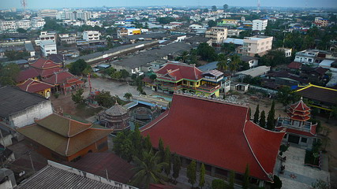
中華系の寺としてはとりたてて珍しい訳ではないが、考えてみたらタイで中国寺院に行った事がない…ような気がしたのでこれも長く険しい珍寺修行の一環！と思い行ってみる事にした。
…というかホントは泊まった宿の隣だったので朝飯前の散歩がてらチョット寄ってみただけなんですけどね。
部屋から見おろして気になったのがこの池。
左下の建物は分かるが右上の丸いのは何だろう？
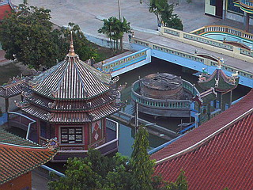
で、宿から30歩。
山門の前に立つ。
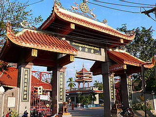
寺の名前は慶安寺。
仏光云々、ナントカ如来といった漢字の看板が架かっており、入口には獅子の銅像。
建物も赤瓦で一瞬どこの国にいるのか分からなくなる程チャイニーズテイスト。
でも屋根の装飾とか細かいところはしっかりタイっぽくまとめております。
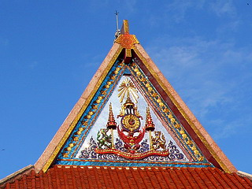
門を入ってすぐの本堂には中国風の仏像が祀られていた。
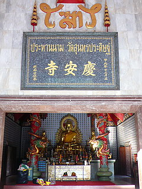
額に甲戌年となっているので1994年の建立なのだろう。寺自体が最近創設されたのだろうか？
壁には小さな萬体仏、柱には龍、正調チャイニーズスタイルである。
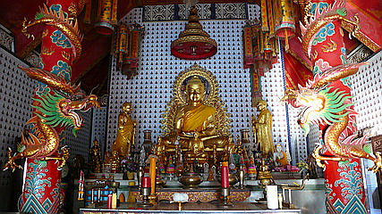
本堂の後ろには弥勒殿が。
門の額から西暦2003年に建てられた事がわかる。
つまりほんの数年前につくられた、という事だ。
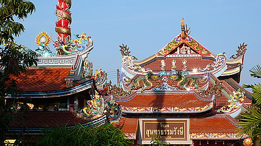
こってり風味の梁の向こうに鋳造製の弥勒サマが。
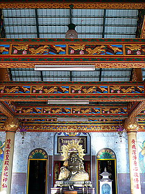
近づいて見るとオヘソが貯金箱のようにバックリと割れている。
いや、もしかしたら賽銭用に穿ってあるのかもしれない。
油断ならない弥勒さんである。
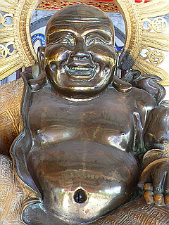 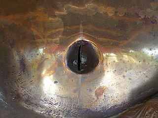
弥勒殿の飾り窓。
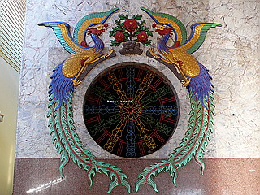
気になっていた池の上の丸いモノだが…どうやらまだ工事中だったみたいで、隣と同じような八角堂が建つみたいです…
こんなコッテコテの中華寺院にもタイの民間信仰の象徴、プームがあるところが凄い。
これだけがタイであることを主張していたように思う。
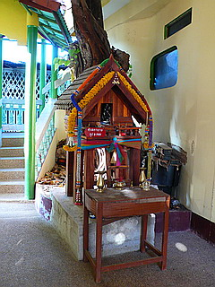
小さな少年僧が境内を掃除しており、いつもは地獄だ、大仏だ、と澱んだ怨念に突き動かされて歩き回っている私でさえも清浄な気分になってくる。
あー腹減った。朝飯食おっと。
結局ウドン滞在中、毎日この寺を見て過ごした訳だが、正月、街のあちこちで花火が打ち上げられている中、この寺では何やら僧侶達が全員集合していた。
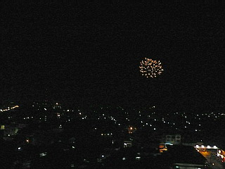 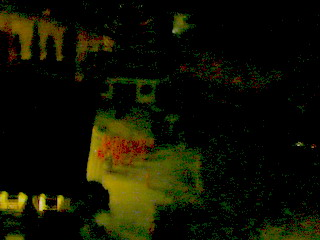
薄暗い境内で新年のお祝いでもしていたんでしょうか…
次の珍寺へＧＯ！
泰国珍寺修行 北へ
珍寺大道場 HOME